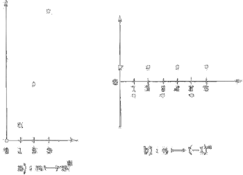

Successioni
Consideriamo l'insieme ℕ degli interi non negativi ordiano secondo l'ordine naturale.
ℕ: 0, 1, 2, 3, ..., n
Questo è l'esempio canonico di successione. Stabiliamo ora una legge che associa, a ogni elemento di ℕ (o da un certo intero in poi) un numero (reale):
n ⟼ an
Chiameremo successione una tale corrispondenza.
Una successione può dunque vedersi come una funzione
f : ℕ → ℝ
f: n ⟼ an
(o eventualmente, f: {n ∈ ℕ: n ≥ n0} ⟶ ℝ, per un certo n0 fissato). Il fatto che il dominio della funzione f sia l'insieme dei naturali, rende possibile visualizzare la successione enumerando i suoi valori, nell'ordine in cui essi si succedono al crescere di n:
a0,a1,a2,a3, ... ,an, ...
| n ≥ 0 | n ⟼ n2 | 0,1,4,9,16,.. |
| n ≥ 0 | (−1)n | −1, 1, −1, 1, −1, ... |
| n ≥ 1 | n ⟼ 21/n | 2,√2,21/3, 21/4.. |
| n ≥ 1 | n ⟼ 1/n | 1,1/2,1/3,1/4,... |
| n ≥ 2 | n ⟼ (n + 1)/(n − 1) | 3,2,5/3,6/4,7/5, ... |
| n ≥ 0 | n ⟼ 4 | 4,4,4,. (successione costante) |
Possiamo rappresentare graficamente questa corrispondenza con i punti del piano cartesiamo di coordinate (n,an).
Sottolineamo che la successione è nota quando è nota la legge che, dato l'intero n, determina il numero an associato a qull'intero. Per indicare una successione useremo i simboli
n ⟼ an oppure {an}
precisando l'insieme in cui varia l'indice n (tutto ℕ o da un certo intero in poi).
Una successione {an} si dirà
limitata inferiormente: ∃m ∈ ℝ: an ≥ m, ∀n ∈ ℕ;
limitata superiormente: ∃M ∈ ℝ: an ≤ M, ∀n ∈ ℕ;
limitata: ∃m,M ∈ ℝ : m ≤ an ≤ M ∀n ∈ ℕ;
Per esempio, la successione {(−1)n)} è limitata; esistonto infatti due numeri {−1, 1}; lo stesso per {1/n}: superiormente da 1 e inferiormente da 0; {n2} è limitata inferiormente; {(−2)n)} non è limitata.
L'operazione che vogliamo definire (il limite) consente di rispondere in forma rigorosa alla domanda: come si comportano i numeri {an} quando n diventa sempre più grande?
Definizione 3.1.2. Diciamo che una successione {an} possiede (o acquista) definitivamente una certa proprietà P(n) se
∃n0 ∈ ℕ : ∀n ≥ n0 P(n) è vera. □
Per esempio la proprietà:
P(n) = n2 − 10n + 1 ≥ 0
vale definitivamente in quanto
n2 − 10n + 1 ≥ 0 ⇔ n ≥ 5 + √24 ⇔ n ≥ 10
Notiamo per esempio che la proprietà
Q(n) = "(−1)n > 0
pur essendo vera per infiniti n (cioè per tutti gli n pari), non è definitivamente vera, in quanto è falso per tutti gli interi dispari.
Definizione 3.1.3. Una proprietà P(n) definita per n intero è detta valere frequentemente, o per infiniti n, se
∀n0 ∃n ≥ n0 : P(n) è vera.
Quindi, come già detto, (−1)n è frequentemente > 0 (dato che comunque fissato n0 in ℕ c'è un n pari con n ≥ n0, e quindi (−1)n > 0. Peraltro è anche vero che (−1)n è frequentemente < 0.
Notiamo che
¬(P(n) vale definitivamente) ⇔ ¬(∃n0: ∀n ≥ n0 P(n)) ⇔ ∀n0 ∃n ≥ n0 : ¬P(n) ⇔ ¬P(n) vale frequentemente
(o anche P(n) è frequentemente falsa). Analogamente:
¬(P(n) vale frequentemente) ↔ ¬P(n) vale definitivamente
(o anche P(n) è definitivamente falsa).
Successioni convergenti
A natural inquiry abount a sequence {an} is whether the terms an come close to any real number when n is extremely large. This is what is known as the convergence of a sequence.
Definizione 3.1.4. (Limite di una successione) Una successione {an} si dice convergente se esiste un numero ℓ ∈ ℝ, con questa proprietà: qualunque sia ε > 0 risulta definitivamente:
|an − ℓ| < ε, ∀n ≥ n0
In altre parole. per ogni ε > 0 si può trovare un intero n0 (che naturalmente dipenderà in generale da questo ε) tale che la disuguaglianza scritta sopra sia valida.
Scriveremo
Si osservi che, dalla definizione di valore assoluto (cfr. esercizio 1), la relazione |an − ℓ| < ε si può riscrivere come
ℓ − ε < an < ℓ + ε
da questa relazione appare chiaro che ogni successione convergente è anche limitata. La condizione di convergenza significa quindi che, fissata una striscia orizzontale [ℓ − ε, ℓ + ε] "comunqe stretta", da un certo indice in poi i punti della successione non escono più da questa striscia. Da questa osservazione risulta chiaramente che: ogni successione convergente è limitata.
Unicità del limite. Se la successione {an} è convergente, ad essa è associato perciò il numero ℓ. Si osservi che tale numero è unicio, poihcé, se ve ne fossere due, ℓ1 e ℓ2, associati alla medesima successione, risulterebbe definitivamente (applicando la disuguaglianza triangolare)
|ℓ1 − ℓ2| = |ℓ1 − an + an − ℓ2| ≤ |ℓ1 − an| + |an − ℓ2| < 2ε
ma tale disuguaglianza, potendo noi scegliere ε come vogliamo, può sussitere solo se ℓ1 = ℓ2.
Esempio 3.1.5. Mostriamo che
(cosa che si può facilmente intuire osservando l'andamento della successione). Delle due disuguaglianze
quella di sinistra è sempre soddisfatta, mentre quella di destra è soddisfatta per
n > (2 + ε)/ε
Fissato ε > 0, basterà scegliere n0 = (2 + ε)/ε (o ugugale al primo intero > (2 + ε)/ε) per soddisfare la condizione richiesta dalla definizione di limite. ■
Esempio 3.1.6. Per mostrare che 21/n per n → ∞, si studiano le disuguaglianze
1 − ε < 21/n < 1 + ε
Quella di sinistra è sempre soddisfastta; quella di destra, prendendo il logarito (in base 2) di ambo i membri, si scrive
1/n < log2(1 + ε)
ed è soddisfatta se n > 1/log2(1 + ε). Si sceglie perciò n0 = 1/log2(1 + ε). ■
Non risultato invece convergenti le prime due successioni dell'esempio 3.1.1. Esse sono però molto diverse tra loro e conviene introdurre definizioni che ne mettano in risalto la differenza.
Esempio 3.1.4. Sia an = 1/n, n = 1, 2, .... Allora la successione converge a 0. Sia ε > 0 e si scelga N con l'intero successivo a 1/ε (we use the Archimedean property, se r,ε are positive real numbers, ∃n: nε > r). If n > N then
|an − 0| = |an| = 1/n < 1/N < ε
proving the claim. ■
Esempio 3.1.7. The sequence an = (n2 + 1)/(n2 + 2n − 1) has limit 1; indeed
1 − (n2 + 1)/(n2 + 2n − 1) = 2(n − 1)/(n2 + 2n − 1) < 2n/n2 = 2/n < ε
for n > 2/ε. It is not generally necessary to find the least n0 such that the previous relation is satisfied. ■
In some cases ∞ or −∞ can be regarded as “limits” of a sequence {an}. We say that {an} tends to ∞ or diverges to ∞ if for every α ∈ ℝ, there is n0 ∈ ℕ such that an > α for all n ≥ n0, and then ∞ if {an} does not tend to ∞. Similarly, we say that {an} tends to −∞ or diverges to −∞ if for every β ∈ ℝ, there is n0 ∈ ℕ such that an < β for all n ≥ n0 , and we write an → −∞.
Teorema 3.1.8 Every convergent sequence in ℝ is bounded. The converse is not true.
Dim. Sia {an} convergente a ℓ. Se ε = 1, ∃N ∈ ℕ:
n ≥ N ⇒ |an − ℓ| = 1
The triangle inequality yields
|an| − |L| ≤ |an − ℓ|
it follows |an| ≤ 1 + |ℓ| for all n > N. Now, set
K = sup {|a1|, |a2|, ..., |an|, |ℓ| + 1}
Thus |an| ≤ K for all n ∈ ℕ. In other words {an} is bounded by −K and K. □
Is the converse of the above theorem true? No, as the following example shows. We will show later that a bounded monotone sequence converges.
Exmaple 3.1.7 {(−1)n)} is bounded by 1 but does not have a unique limit. Suppose that (−1)n ⟶ ℓ as n ⟶ ∞. Given ε = 1/2, then there is an N ∈ ℕ such that n ≥ N implies |(−1)n − ℓ| < ε For n odd this implies |1 + ℓ| = |−1 −ℓ| < 1/2 and for n even this implies |1 − ℓ| < 1/2. Hence
2 = |1 + 1| = |(1 − ℓ) + (1 + ℓ)| ≤ |1 − ℓ| + |1 + ℓ| < 1/2 + 1/2 = 1
This implies 2 < 1, a contradiction. Therefore, the sequence (−1)n does not converge. ■
Theorem 3.1.8. (Monotone Sequence Theorem). A bounded and monotone sequence converges to its supremum as n ⟶ ∞.
Proof. Let {an} a sequence bounded above, whose least upper bound α = sup an exists as a real number. Suppose ε > 0 is given; since α is the least upper bound of {an} there must exist n0 ∈ ℕ such that
n ≥ n0 ⇒ an > α − ε ⟶ an − α < − ε or α − an < ε
or equivalently
n ≥ n0 ⇒ |an − α| < ε
thus {an} converges to α as n ⟶ ∞. □
Our recipe for finding the limit of a sequence {an} is therefore to show that {an} is monotone and bounded.
Example 3.1.8 (AP). An arithmetic sequence or arithmetic progression (AP) is a sequence in which each term after the first term is formed by adding a constant number to the preceding term. Consider the sequence 1, 4, 7, 10,... where each term is obtained from the previous term by adding the constant value 3. The general form of a term in this sequence is an = 3n − 2. The general form of an arithmetic sequence is given by
a1, a1 + d, a1 + 2d, a1 + 3d, ..., a1 + (n − 1)d
The nth term of an A.P. is given by
an = a1 + (n − 1)d
The value a1 is the initial term in the sequence, and the value d is the constant difference between a term and its successor. In the above example we have a = 1 and d = 3.
By mathematical induction method, we prove that hte sum Sn, of the first n terms of arithmetic progression is calculated by the formula
For n = 1, we obtain S1 = (1/2) (a1 + a1) = a1.
Assume that the formula for Sn holds for all positive integers n ≥ 1, then we'll prove the formula for n + 1, that is
We have that Sn+1 = Sn + an+1 and according to the inductive hyphothesys Sn =(a1 + an)n/2. Then
completing the proof. ■